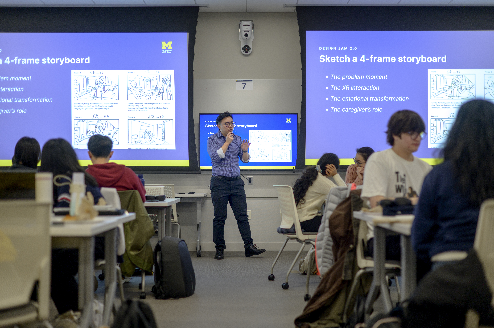
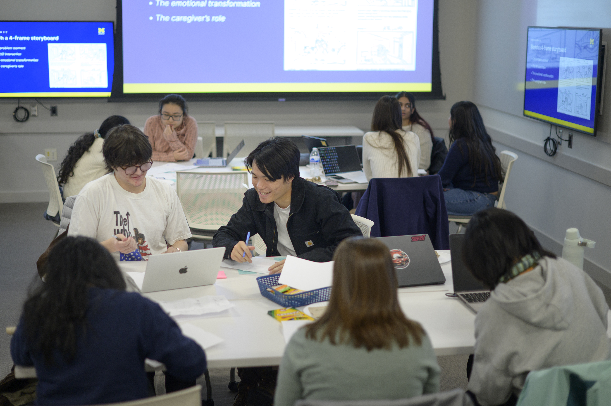

Phase 2: Starting the Experience
Establishing professional communication, conducting initial meetings, and finalizing partnership agreements.
Why This Phase Matters
First impressions shape the trajectory of a partnership. The starting phase is where abstract project ideas turn into structured, professional commitments. By establishing clear team contracts, co-creating agendas, and aligning on project scope early, you build psychological safety within your team and trust with your client. Learning how to navigate early ambiguity is one of the most valuable professional capabilities you will gain at UMSI.

Focus and Resources
Focus & Objectives
- Partner Communication: Draft clear, professional outreach to launch working relationships.
- First Meetings: Structure productive kickoff meetings that define roles and project bounds.
- Formalizing Agreements: Document team commitments and scope agreements shared by all stakeholders.

Featured Resources & Handouts